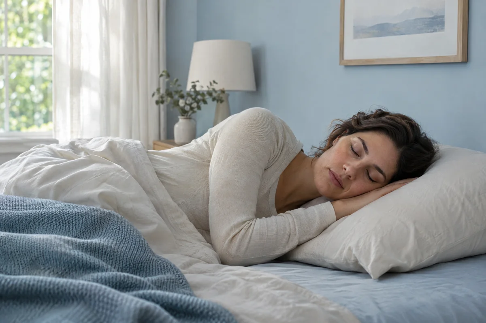

Движение и быт · 2 мин чтения
Спина и шея за компьютером: как менять рабочий день
Организация места, перерывы и разнообразие задач без поиска единственной идеальной позы.
18 ноября 2026 · Редакционный разбор

Долгая работа за экраном может сопровождаться дискомфортом в спине, шее и руках. Имеет смысл оценивать весь рабочий процесс: оборудование, расположение предметов, длительность одинаковых задач и возможность менять положение.
В этой статье
Что оценить на рабочем месте
Британский регулятор охраны труда HSE рекомендует оценку рабочего места с экраном и снижение рисков, связанных с длительным использованием оборудования. Причины дискомфорта могут включать организацию пространства и характер нагрузки.
Проверьте, удобно ли видеть экран, доставать клавиатуру и мышь, опираться на кресло и располагать ноги. Если для работы с ноутбуком приходится постоянно наклоняться, обсудите изменение расположения экрана и устройств ввода.
Как использовать перерывы
HSE советует включать в рабочий день перерывы или смену деятельности. Короткие частые паузы могут быть удобнее редких длинных. Универсальной частоты для любого человека и любой работы ведомство не задаёт.
Смысл паузы — изменить нагрузку и позу. Если вместо компьютера взять телефон и продолжить смотреть вниз, характер нагрузки может почти не измениться. Можно заранее подобрать задачи, которые позволяют встать или переключиться.
Когда дело выходит за рамки эргономики
Если боль нарастает, ограничивает обычные дела или сопровождается нарушением чувствительности и силы, настройкой кресла вопрос не исчерпывается. Это повод обратиться за медицинской оценкой.
На приёме удобно описать связь симптомов с длительностью работы и конкретными действиями. Принесите пример рабочего дня и перечислите изменения места, которые уже пробовали.
Что менять первым
Выберите одну заметную трудность: экран далеко, мышь неудобно расположена, нет возможности прерывать монотонную задачу. После изменения оцените, стало ли легче выполнять работу и сохранять разнообразие положений.
Для возвращения к работе после эпизода боли могут потребоваться временные изменения задач и режима. Обсудите их со специалистом и работодателем, если это возможно. Такой план конкретнее покупки «правильного» аксессуара без оценки процесса.
HSE — Working safely with display screen equipment · HSE — Work routine and breaks
Вопросы к специалисту
- Какая задача сильнее всего связана с симптомами?
- Можно ли изменить место или чередование деятельности?
- Нужны ли временные ограничения и медицинская оценка?
Источники
Официальные материалы и первичные публикации, использованные в разборе. Проверены при подготовке 18 ноября 2026 года.
Материал помогает ориентироваться в теме и готовить вопросы. Индивидуальные решения об обследованиях, лечении и использовании оборудования принимают с медицинским специалистом.
Связанные вопросы
 Шея и плечо
Шея и плечоБолит и плохо поворачивается шея
Что наблюдать при скованности и когда планового обращения недостаточно.

Спина и поясницаЕсли поясница болит больше трёх месяцев
Чем отличается помощь при длительной боли и как ставят реалистичные цели восстановления.
 Движение и быт
Движение и бытКак возвращать движение после боли в спине
Посильная нагрузка, постепенность и вопросы к специалисту вместо универсального комплекса упражнений.